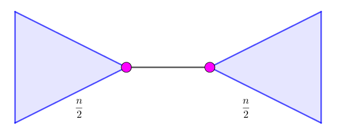

图 (Graph)：图是一个二元组 $(V, E)$，其中 $V, E$ 为集合 (多重集)，图常用 $G, H$ 等表示，如：$G = (V, E)$。
图分为无向图 (Undirected graph) 和有向图 (Directed graph) 两种，若 $G$ 为无向图，则 $E$ 中的每个元素为一个无序二元组 $(u, v)$，称作无向边 (Undirected edge)，简称边 (Edge)，其中 $u, v \in V$。设 $e = (u, v)$，则 $u, v$ 称为 $e$ 的端点 (End-vertex)。
若 $G$ 为有向图，则 $E$ 中的每一个元素为一个 (有序) 二元组 $(u, v)$，有时也写作 $u \to v$，称作有向边 (Directed edge) 或弧 (Arc)，在不引起混淆的情况下也可以称作边。设 $e = u \to v$，则此时 $u$ 称为 $e$ 的起点 (Origin)，$v$ 称为 $e$ 的终点 (Terminus)，起点和终点也称为 $e$ 的端点。
对于 $V$ 中的每个元素，我们称其为顶点 (Vertex)或节点 (Node)，简称点 (Vertex)，顶点的集合称为点集 (Vertex set)，边的集合称为边集 (Edge set)。
图 $G$ 的点集和边集可以表示为 $V(G)$ 和 $E(G)$，在不引起混淆的情况下，也能表示成 $V, E$。图 $G$ 的点数 $\left| V(G) \right|$ 也被称作图 $G$ 的阶 (Order)。
简单图 (Simple graph)：若一个图中没有自环和重边时，它被称为简单图。
自环 (Loop)：对 $E$ 中的边 $e = (u, v)$，若 $u = v$，则 $e$ 被称作一个自环。
重边 (Multiple edge)：若 $E$ 中存在两个完全相同的元素 (边) $e_1, e_2$，则它们被称作 (一组) 重边。
如果一张图中有自环或重边，则称它为重图 (Multigraph)。
Warning 1：在无向图中 $(u, v)$ 和 $(v, u)$ 算一组重边，而在有向图中，$u \to v$ 和 $v \to u$ 不为重边。
Warning 2：在题目中，如果没有特殊说明，默认存在自环和重边，在做题时需特殊考虑。
在无向图 $G = (V, E)$ 中，若点 $v$ 是边 $e$ 的一个端点，则称 $v, e$ 是关联的 (Incident) 或相邻的 (Adjacent)。对于两个顶点 $u, v$，若存在一条边与它们均关联，则称 $u, v$ 是相邻的 (Adjacent)。
一个顶点 $v \in V$ 的邻域 (Neighborhood) 是这样一个集合：它是所有与之相邻的顶点所构成的集合，记作 $N(v)$。
一个点集 $S$ 的邻域是这样一个集合：它是所有与 $S$ 中至少一个点相邻的集合，记作 $N(S)$。由定义，$$ N(S) = \bigcup_{v \in S} N(v) $$
与一个顶点 $v$ 关联的边的条数称作该顶点的度 (Degree) (或次数)，记作 $d(v)$。特别地，对于边 $(v, v)$，则每条这样的边要对 $d(v)$ 产生 $2$ 的贡献。
对于无向简单图，有 $d(v) = \left| N(v) \right|$。
对于任何无向图 $G = (V, E)$，有 $$ \sum_{v \in V} d(v) = 2 \left| E \right| \tag 1 \label 1 $$
- 若 $d(v) = 0$，则称 $v$ 为孤立点 (Isolated vertex)。
- 若 $d(v) = 1$，则称 $v$ 为叶节点 (Leaf vertex)/悬挂点 (Pendant vertex)。
- 若 $2 \mid d(v)$，则称 $v$ 为偶点 (Even vertex)。
- 若 $2 \nmid d(v)$，则称 $v$ 为奇点 (Odd vertex)。由 $\eqref 1$，图中奇点的个数是偶数。
- 若 $d(v) = \left| V \right| - 1$，则称 $v$ 为支配点 (Universal vertex) (不常见)。
对一张图，所有节点的度数的最小值称为 $G$ 的最小度 (Minimum degree)，记作 $\delta (G)$；最大值称为最大度 (Maximum degree)，记作 $\Delta (G)$。
则有 $\displaystyle \delta (G) = \min_{v \in G} d(v); \Delta (G) = \max_{v \in G} d(v)$。
在有向图 $G = (V, E)$ 中，以一个顶点 $v$ 为起点的边的条数称为该顶点的出度 (Outdegree)，记作 $d^+(v)$。以一个顶点 $v$ 为终点的边的条数称为该节点的入度 (Indegree)，记作 $d^-(v)$。
对于任何有向图 $G = (V, E)$，有 $$ \sum_{v \in V} d^+(v) = \sum_{v \in V} d^-(v) = \left| E \right| \tag 2 \label 2 $$
若对一张无向图 $G = (V, E)$，每个顶点的度数都是一个固定的常数 $k$，则称 $G$ 为 $k-$正则图 ($k-$Regular Graph)。
对两个阶数相等的简单图 $G, H$，如果存在一个双射 $f : V(G) \to V(H)$，满足对于两个顶点 $u, v$ ($u \neq v$)，$u, v$ 在 $G$ 中相邻当且仅当 $f(u)$ 和 $f(V)$ 在 $H$ 中相邻，则我们称 $f$ 为 $G$ 到 $H$ 的一个同构 (Isomorphism)，且图 $G$ 与图 $H$ 是同构的 (Isomorphic)，记作 $G \cong H$。
途径 (Walk)：一个点和边的交错序列，其中首尾是点——$v_0, e_1, v_1, e_2, v_2, \cdots, e_k, v_k$，有时简写为 $v_0 \to v_1 \to v_2 \to \cdots \to v_k$。其中 $e_i$ 的两个端点分别为 $v_{i-1}$ 和 $v_i$ (以下默认设 $w = \left[ v_0, e_1, v_1, e_2, v_2, \cdots, e_k, v_k \right]$)。
迹 (Trail)：对于一条途径 $w$，若 $e_1, e_2, \cdots, e_k$ 两两互不相同，则称 $w$ 是一条迹。
路径 (Path) (又称简单路径 (Simple path))：对于一条迹 $w$，除了 $v_0$ 和 $v_k$ 允许相同外，其余点两两互不相同，则称 $w$ 是一条路径。
回路 (Circuit)：对于一个迹 $w$，若 $v_0 = v_k$，则称 $w$ 是一个回路。
环/圈 (Cycle) (又称简单回路 (Simple circuit))：对于一条简单路径 $w$，若 $v_0 = v_k$，则称 $w$ 是一个环。
对于一张无向图 $G = (V, E)$，对于 $u, v \in V$，存在一条途径使得 $v_0 = u, v_k = v$，则称 $u, v$ 是连通的 (Connected)。由定义，任意一个顶点和自身连通，任意一条边的两个端点连通。
若无向图 $G = (V, E)$，满足其中任意两个顶点均连通，则称 $G$ 是连通图 (Connected graph)，$G$ 的这一性质称作连通性 (Connectivity)。
对一张图 $G = (V, E)$，若存在另一张图 $H = (V', E')$ 满足 $V' \subseteq V; E' \subseteq E$，则称 $H$ 是 $G$ 的子图 (Subgraph)，记作 $H \subseteq G$。
若对 $H \subseteq G$，满足对 $\forall u, v \in V'$，只要 $(u, v) \in E$，均有 $(u, v) \in E'$，则称 $H$ 是 $G$ 的导出子图/诱导子图 (Induced subgraph)。
容易发现，一个图的导出子图仅由子图的点集决定，因此点集为 $V'$ ($V' \subseteq V$) 的导出子图称为 $V'$ 导出的子图，记作 $G \left[ V' \right]$。
若 $H \subseteq G$ 满足 $V' = V$，则称 $H$ 为 $G$ 的生成子图/支撑子图 (Spanning subgraph)。
如果一张无向图 $G$ 的某个生成子图 $F$ 为 $k-$正则图，则称 $F$ 为 $G$ 的一个 $k-$因子 ($k-$Factor)。
如果有向图 $G = (u, v)$ 的导出子图 $H = G \left[ V^* \right]$ 满足 $\forall v \in V^*, (v, u) \in E$，就有 $u \in V^*$，则称 $H$ 为 $G$ 的一个闭合子图 (Closed subgraph)。
对于无向简单图 $G = (V, E)$，它的补图 (Complement graph)指的是这样的一张图，记作 $\bar G$，满足 $V \left( \bar G \right) = V \left( G \right)$，且对任意节点对 $(u, v)$，$(u, v) \in E \left( G \right)$ 当且仅当 $(u, v) \notin E \left( G' \right)$。
一些特殊的无向简单图：
若 $G = \left( V, E \right)$ 满足，$\forall u, v \in V, u \neq v$，均有 $(u, v) \in E$，则称 $G$ 为完全图 (Complete graph)，$n$ 阶完全图记作 $K_n$。
若 $G = \left( V, E \right)$ 满足 $E = \varnothing$，则称 $G$ 为零图 (Null graph)，$n$ 阶零图记作 $N_n$。易知，$N_n$ 为 $K_n$ 互为补图。
若 $G = \left( V, E \right)$ 的所有边恰好构成一个圈，则称 $G$ 为环/圈图 (Cycle graph)，$n$ ($n \geq 3$) 阶圈图记作 $C_n$。易知，一张图为圈图的充分必要条件是，它是 $2-$正则连通图。
若 $G = \left( V, E \right)$ 满足，存在一个点 $v$ 为支配点，其余点之间没有边相连，则称 $G$ 为星图/菊花图 (Star graph)，$n + 1$ ($n \geq 1$) 阶星图记作 $S_n$。
若 $G = \left( V, E \right)$ 满足，存在一个点 $v$ 为支配点，其它点之间构成一个圈，则称 $G$ 为轮图 (Wheel Graph)，$n + 1$ ($n \geq 3$) 阶轮图记作 $W_n$。
若 $G = \left( V, E \right)$ 的所有边恰好构成一条简单路径，则称 $G$ 为链 (Chain/Path Graph)，$n$ 阶的链记作 $P_n$。易知，一条链由一个圈图删去一条边而得。
立方体图 (Hypercube graph) 的定义见 #13。
如果一个无向连通简单图没有圈，则称它是一棵树 (Tree)。
非空的 $n$ 阶树恰好有 $n - 1$ 条边。这既是无圈图的边数上限，也是连通图的边数下限。
链和圈图都是特殊的树。
如果一个图由若干棵不相交的树构成，则称它是一个森林 (Forest)。易知，一个无向简单图是森林的充要条件是，它没有圈。
由 $\eqref 1$，树至少有两个叶节点。
对于无向简单图，我们可以定义如下二元运算：
交 (Intersection)：两张图 $G = \left( V_1, E_1 \right), H = \left( V_2, E_2 \right)$ 的交定义成图 $G \cap H = \left( V_1 \cap V_2, E_1 \cap E_2 \right)$。
容易证明两个无向简单图的交还是无向简单图。
并 (Union)：两张图 $G = \left( V_1, E_1 \right), H = \left( V_2, E_2 \right)$ 的并定义成图 $G \cup H = \left( V_1 \cup V_2, E_1 \cup E_2 \right)$。
和 (Sum)/直和 (Direct sum) (注意与并的区别)：对于 $G = \left( V_1, E_1 \right), H = \left( V_2, E_2 \right)$，任意构造 $H' \cong H$ 使得 $V \left( H' \right) \cap V_1 = \varnothing$ ($H'$ 可以等于 $H$)。此时与 $G \cup H'$ 同构的任何图称为 $G$ 和 $H$ 的和/直和/不交并，记作 $G + H$ 或 $G \oplus H$。
若 $G$ 与 $H$ 的点集本身不相交，则 $G \cup H = G + H$。
比如，森林可以定义成若干棵树的和。
例子：设 $G = \left( \{1, 2, 3\}, \{(1, 2), (2, 3)\} \right), H = \left( \{2, 3, 4\}, \{(2, 4), (3, 4)\} \right)$，则 $G \cup H = \left( \{1, 2, 3, 4\}, \{(1, 2), (2, 3), (2, 4), (3, 4)\} \right)$，而 $G + H$ 可以表示为 $\left( \{1, 2, 3, 4, 5, 6\}, \{(1, 2), (2, 3), (4, 6), (5, 6)\} \right)$。
笛卡尔积 (Cartesian product)：对 $G = \left( V_1, E_1 \right), H = \left( V_2, E_2 \right)$，令 $V = V_1 \times V_2$ 为两个点集的 Cartesian 积，取 $\forall (u_1, u_2), (v_1, v_2) \in V$，其中 $u_1, v_1 \in V_1; u_2, v_2 \in V_2$。
令 $E$ 满足，$\left( \left( u_1, u_2 \right), \left( v_1, v_2 \right) \right) \in E$ 当且仅当 $\left( u_1 = v_1 \wedge \left( u_2, v_2 \right) \in E_2 \right) \vee \left( \left( u_1, v_1 \right) \in E_1 \wedge u_2 = v_2 \right)$。则 $G$ 和 $H$ 的 Cartesian 积定义为 $G \times H = \left( V, E \right)$。
例子：下图中，左边两个图的 Cartesian 积是右边那张图。

#11 拓展：定义立方体图 (Hypercube graph) $Q_n$ 满足：
$Q_0 = K_1, Q_1 = K_2, Q_n = Q_{n-1} \times Q_1 (n \geq 2)$。
易知 $Q_2 \cong C_4$，$Q_3$ 为平面立方体的展开图。
$Q_n$ 是 $2^n$ 阶图，有 $2^{n-1} n$ 条边，是 $n-$正则图。
对于无向简单图，我们还能定义如下一元运算：
补图 (Complement graph)：在 #10 中已经介绍。
删除一条边：对图 $G = \left( V, E \right)$，删去边 $e$ 后的图简记作 $G \setminus \{e\}$。：
缩边 (Edge contraction)：
线图 (Line graph)：
对于无向简单图，我们还能定义如下二元关系：